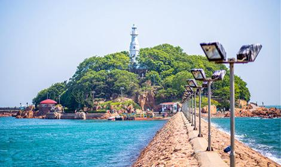

小青岛
时间：2019/11/11

【简介】

小青岛公园是山东省青岛市的标志性建筑，位于胶州湾入海口的青岛湾内，占地面积2.47平方千米。因岛上林木长青，遂称青岛；岛形如琴，水如弦，风吹波涛如琴声，又称琴岛。
【景区简介】
小青岛原名“青岛”，《胶澳志》中曾记载，这里“山岩耸秀，林木蓊清”，故名“青岛”。又因整座岛屿的形状如同一把古琴，所以又称“琴岛”。
【历史】
小青岛上的灯塔由德国人在1900年建造，塔高12米，通体雪白，至今仍在正常使用。每当夜色降临，塔顶的主灯闪烁起红光，塔底灯柱也亮起绿光。经灯塔工张师傅特许，记者得以进入到灯塔内部探秘。
【交通信息】
公交：6路、26路、202路环线、214路、223路、228路、231路环线、304路、311专、312路区间、316路、321路、501路、504路、隧道2路、隧道6路“鲁迅公园（海底世界）”站下，沿琴屿路向西步行约800米可到岛上。 312路、501路、旅游1号线“鲁迅公园”站下，沿琴屿路向西步行约800米可到岛上。 乘地铁M3号线在人民会堂站下车。 快艇：栈桥南边的码头坐快艇到小青岛，只要3分钟，参考价30元。